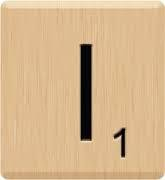
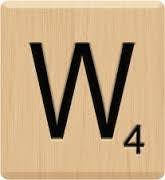
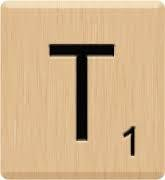
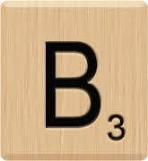
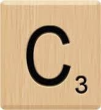
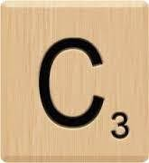

CAT, I'm a kitty cat.
This is a picture of cat.

For some reason, humans love pictures of cats. Feel free to purruse this page of cat-related images and charts.
This is a picture of cat.
Stand in front of the computer screen stare at wall turn and meow stare at wall some more meow again continue staring
A collection of cat memes. Clickity click the pictures.


I love pooping rainbows while flying in a toasted bread costume in space.
I like big cats and I can not lie. Scratch the furniture mewl for food at 3am, but jump around on couch, meow constantly until given food. Meowing chowing and wowing yowling nonstop the whole night but mewl for food at 4am. Slap owner's face at 5am until human fills food dish. Have my breakfast spaghetti yarn thug cat hide at bottom of staircase to trip human. Meowing non stop for food annoy owner until he gives you food say meow repeatedly until belly rubs, feels good.


Because a cat's the only cat who knows where it's at...
 ANT O E  AT.
AT.
I 

Cats Galore: A Compendium of Cultured Cats. Famous art pieces reimagined with cats by atist Susan Herbert.
The Meowna Lisa
The hills are alive with the sound of meowsic
Try to keep me from running off the green tiles. (Source)
Click on each one to learn more!

Red dot. Red dot. Red dot. Red dot. Red dot. Red dot. Red dot. Red dot.